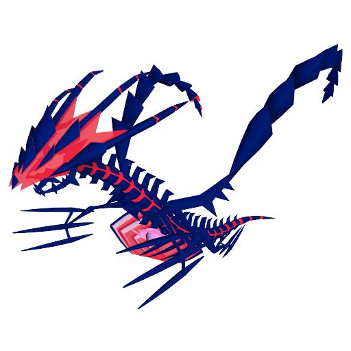
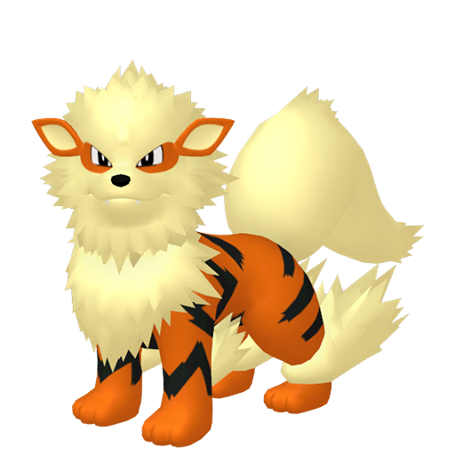

Pokemon Data Explored
parakaki
3/5/2022
Last updated: 2022-03-05
Checks: 7 0
Knit directory: Pokemon Data with R/
This reproducible R Markdown analysis was created with workflowr (version 1.7.0). The Checks tab describes the reproducibility checks that were applied when the results were created. The Past versions tab lists the development history.
Great! Since the R Markdown file has been committed to the Git repository, you know the exact version of the code that produced these results.
Great job! The global environment was empty. Objects defined in the global environment can affect the analysis in your R Markdown file in unknown ways. For reproduciblity it’s best to always run the code in an empty environment.
The command set.seed(20220305) was run prior to running the code in the R Markdown file. Setting a seed ensures that any results that rely on randomness, e.g. subsampling or permutations, are reproducible.
Great job! Recording the operating system, R version, and package versions is critical for reproducibility.
Nice! There were no cached chunks for this analysis, so you can be confident that you successfully produced the results during this run.
Great job! Using relative paths to the files within your workflowr project makes it easier to run your code on other machines.
Great! You are using Git for version control. Tracking code development and connecting the code version to the results is critical for reproducibility.
The results in this page were generated with repository version c98abbc. See the Past versions tab to see a history of the changes made to the R Markdown and HTML files.
Note that you need to be careful to ensure that all relevant files for the analysis have been committed to Git prior to generating the results (you can use wflow_publish or wflow_git_commit). workflowr only checks the R Markdown file, but you know if there are other scripts or data files that it depends on. Below is the status of the Git repository when the results were generated:
Ignored files:
Ignored: .Rhistory
Ignored: .Rproj.user/
Untracked files:
Untracked: PKMN_EDA.R
Untracked: PKMN_EDA_PKMN8.R
Untracked: PKMN_EDA_moves8.R
Untracked: Pokemon EDA.Rproj
Untracked: data/Pokemon_list.csv
Untracked: data/Pokemon_moves.csv
Note that any generated files, e.g. HTML, png, CSS, etc., are not included in this status report because it is ok for generated content to have uncommitted changes.
These are the previous versions of the repository in which changes were made to the R Markdown (analysis/Pokemon_EDA.rmd) and HTML (docs/Pokemon_EDA.html) files. If you’ve configured a remote Git repository (see ?wflow_git_remote), click on the hyperlinks in the table below to view the files as they were in that past version.
| File | Version | Author | Date | Message |
|---|---|---|---|---|
| Rmd | c98abbc | parakaki | 2022-03-05 | Initial file publish |
Introduction
Pocket Monsters, or Pokémon or Pokemon, is a video game series developed by Game Freak and published by Nintendo and The Pokemon Company. Since the release of Pokemon Red and Pokemon Green in Japan on 27 February 1996, the franchise has expanded greatly, incorporating a trading card game, multiple animated and manga series, and many varieties of merchandise. The series is readying the ninth generation of creatures, which will be introduced in late 2022.
In this project, we will focus on the games, specifically the Pokemon themselves and their moves. This will come in three major parts. The first two parts are simple data explorations: we will look into basic questions regarding stats and moves for a better glimpse into the world of Pokemon. The third part provides a number of additional questions that we can answer using the data.
The data in this project are scraped from notable Pokemon websites Bulbapedia and The Pokemon Database. To perform the data analysis, we will make use of the Tidyverse packages.
-- Attaching packages --------------------------------------- tidyverse 1.3.1 --v ggplot2 3.3.5 v purrr 0.3.4
v tibble 3.1.4 v dplyr 1.0.7
v tidyr 1.1.4 v stringr 1.4.0
v readr 2.0.2 v forcats 0.5.1-- Conflicts ------------------------------------------ tidyverse_conflicts() --
x dplyr::filter() masks stats::filter()
x dplyr::lag() masks stats::lag()The Pokemon
Each Pokemon has up to two types, up to three abilities, and six stats. For this exploration, we will focus on the stats. These are:
HP: hit points, or the Pokemon’s health. When this quantity falls to zero, the Pokemon faints and is unable to participate in battle.
Attack (Atk): a primary factor in how much damage the Pokemon deals when using a physical attack.
Defense (Def): a primary factor in how much damage the Pokemon receives when hit by a physical attack.
Special Attack (SpA): a primary factor in how much damage the Pokemon deals when using a special attack.
Special Defense (SpD): a primary factor in how much damage the Pokemon receives when hit by a special attack.
Speed (Spe): used to determine turn order.
With this many stats that have different effects in battle, we would like to have a simple metric that determines how “good” a Pokemon is in battle: this is base stat total, or BST, which is simply the sum of a Pokemon’s six base stats. In general, the higher the BST, the “better” the Pokemon is. This does not take into acount abilities or moves, but is useful as a quick eye test.
For instance, let us consider the Magikarp line, introduced in Generation (Gen) I. Magikarp is perhaps one of the more well-known Pokemon, mostly because it is weak. In the same order as listed above, Magikarp’s base stats are:
20 / 10 / 55 / 15 / 20 / 80 | 200
We can see that Magikarp has higher Defense (55) than Special Defense (20), that its highest stat is Speed (80), and that its attacking prowess cannot be very good, based on its 10 and 15 Attack and Special Attack, respectively. One the whole, Magikarp’s stat line is not impressive, and its 200 BST is very low across all Pokemon.
Magikarp need not fear though: it evolves into Gyarados, another well-known Pokemon. However, while Magikarp is known for weakness, Gyarados is known for its strength (and how different it is from Magikarp). Let us examine Gyarados’ stat line:
95 / 125 / 79 / 60 / 100 / 81 | 540
Beyond just looking more menacing, each of its stats has increased, with Attack growing the most (+115) and Speed the least (+1). Gyarados’ BST of 540 is now quite respectable.
In Gen VI, Mega Evolutions came to be, which is an in-battle form specific to 48 Pokemon. When Mega-Evolved, a Pokemon’s stats (barring HP) are increased such that BST grows by exactly 100. Gyarados is one such Pokemon with a Mega Evolution.
95 / 155 / 109 / 70 / 130 / 81 | 640
Mega Gyarados has even more Attack, a bit more bulk, and no additional Speed, making it hit harder but not any earlier or later than it normally would.
The Data
Our goal with these Pokemon stats is to group Pokemon by type and generation to look for any trends or surprises. Let’s load the data.
Rows: 1075 Columns: 16-- Column specification --------------------------------------------------------
Delimiter: ","
chr (6): Name, Type1, Type2, Ability1, Ability2, AbilityH
dbl (10): ID, Height_metric, Weight_metric, HP, Atk, Def, SpA, SpD, Spe, BST
i Use `spec()` to retrieve the full column specification for this data.
i Specify the column types or set `show_col_types = FALSE` to quiet this message.Eternatus-Eternamax and Floette-Eternal are both coded into the games but have never been made available; thus, they have been removed from our analysis.
Details on Eternatus and Floette
Both of these Pokemon serve as parts of the games’ stories. Eternatus-Eternamax is the “final boss” of Pokemon Sword and Pokemon Shield, and is intended to be particularly bulky. Let’s take a look at its stats compared to regular Eternatus, which is available in-game.
 140 / 85 / 95 / 145 / 95 / 130 | 690
Regular Eternatus is known as the Gigantic Pokemon, and is the largest known Pokemon as of this writing, sitting at 20 meters (65’07") and 950 kilograms (2094.4 lbs.). It has a good amount of bulk due to its high HP and good defenses, and also has high Special Attack and Speed. Paired with its strong offensive Dragon/Poison typing, Eternatus is a force to be reckoned with.
Now, let’s take a look at its Eternamax form.
255 / 115 / 250 / 125 / 250 / 130 | 1125
This form is even larger (100 meters, 328’01"), so large that it does not have a listed weight. This is a characteristic shared with other Dynamax Pokemon. From a stats perspective, Eternatus-Eternamax is the only Pokemon with a four-digit BST, and either ties or outright sets the record for highest HP, Defense, and Special Defense. Considering that Mega Mewtwo is the next highest overall in terms of BST (780, 345 below Eternatus-Eternamax) and that Arceus is the next highest among Pokemon available in Gen VIII (720, 405 below), it is no surprise that Eternatus-Eternamax is not available in-game beyond its one appearance as a final boss.
Now for Floette-Eternal. This form of Floette played a fairly small role in Pokemon X and Pokemon Y, being the partner Pokemon of the mysterious character AZ. Let’s consider Floette and Floette-Eternal, stat-wise.
54 / 45 / 47 / 75 / 98 / 52 | 371
74 / 65 / 67 / 125 / 128 / 92 | 551
Floette evolves from Flabébé and into Florges, so its stats are expected to be middling. By contrast, Floette-Eternal has much higher stats than a middle evolution stage would likely have (in fact, only 1 point less than Florges). Floette-Eternal is also the only Pokemon to learn the move Light of Ruin, which has also not been released. Considering Pokemon X and Pokemon Y were released in 2013 and Floette-Eternal still remains unreleased, it is unlikely that it will ever become available.
We’ll append generation values for future analysis. Rather than just tacking on numbers, we’ll attach strings for better clarity.
Measures of Spread
Before doing any grouping, let’s get an idea of the data by way of some summary statistics. This will give us a better understanding of what BST is considered “good” versus “bad.” We will also be able to back up our claims about Magikarp and Gyarados.
These stats are performed on the collection of all Pokemon (except for the already-removed Eternatus-Eternamax and Floette-Eternal).
# A tibble: 7 x 8
Summary HP Atk Def SpA SpD Spe BST
* <chr> <chr> <chr> <chr> <chr> <chr> <chr> <chr>
1 Average 70.1 80.9 74.6 73.3 72.2 69.2 440.4
2 SD 26.1 32.4 30.7 32.8 27.5 30.2 119.8
3 0% 1 5 5 10 20 5 175
4 25% 50 56 51 50 50 45 330
5 Median 68 80 70 65 70 65 460
6 75% 83 100 90 95 90 90 515
7 100% 255 190 230 194 230 200 780 Some observations:
All six stats have larger averages than medians. This suggests that all six are positively skewed (skewed right).
BST has a larger median than average. This suggests BST is negatively skewed (skewed left), despite all its constituent parts being positively skewed.
HP has both the highest high, owned by Blissey. HP also has the lowest low, with Shedinja’s HP the only instance of any base stat equal to 1.
Attack has the lowest high, belonging to Mega Mewtwo X; Special Attack is the second-lowest high, this one belonging to Mega Mewtwo Y. Considering these two stats play large parts in determining how much damage moves do, it comes as no surprise from a balance perspective that they are the lowest highs.
Special Defense is the highest low. Many Pokemon, including both Caterpie and Deoxys-Attack, tie for this value.
By its definition, BST has the largest range (605). The lowest is Wishiwash, while the highest is a three-way tie between Mega Mewtwo X, Mega Mewtwo Y, and Mega Rayquaza.
Thinking of Magikarp, all of its stats aside from Speed are below average, with HP, Attack, Special Attack, and Special Defense all more than one standard deviation below.
On the other hand, all of Gyarados’ stats aside from Special Attack are above average, with Attack and Special Defense more than one standard deviation above. And Mega Gyarados’ stats are even more improved; in particular, its Attack is now two standard deviations above the average.
We can test a pair of our skew hypotheses by way of histograms. We’ll try Attack and BST.

Attack across all Pokemon is slightly skewed right, as expected.

BST is all over the place, but is vaguely skewed left. The bin including 600 is the tallest, with many legendary and pseudo-legendary Pokemon fitting this criterion.
Types
Before diving into the data, we give a quick rundown of the types in Pokemon.
In battle, types interact with each other by way of both Pokemon and moves. If we choose a damaging attack against a target, one of four things can happen:
The target is immune to the move.
The target resists the move. This can either halve or quarter the damage received.
The target takes neutral damage.
The target is weak to the move. This can either double or quadruple the damage received.
Let us consider an example. We send out the following Arcanine:

Flare Blitz | Fire
Close Combat | Fighting
Play Rough | Fairy
Extreme Speed | Normal
Our opponent is an Aggron.
Steel / Rock
We can use any of Arcanine’s moves. However, one move is preferred over the rest. Let us consider each case.
Fire is super-effective (×2) against Steel but not very effective against Rock (×0.5). Thus, these two balance out and Flare Blitz is normally effective against Aggron.
Fighting is super-effective against both Steel and Rock. These combine for a ×4 multiplier, meaning Close Combat is our best bet against Aggron.
Steel resists Fairy (×0.5), while Fairy hits Rock for neutral damage. Thus, Aggron resists Play Rough, so we would likely not choose it.
Both Steel and Rock resist Normal. Thus, Extreme Speed is hit by a ×0.25 multiplier, making it the weakest choice here.
We will look at move types in the next chapter.
When first starting out, a type chart is very handy to have. Newer games display move effectiveness in the battle interface, which helps us out.
Gen I introduced fifteen types, including one very overpowered Psychic-type legendary (Mewtwo). Due to this centralization, Gen II introduced a pair of types to combat Psychic: Steel resists Psychic, and Dark is completely immune.
This was the state of the type game through Gen V; at this point, it had become increasingly obvious that Dragon was now the overpowered typing, due to such Pokemon as Dragonite, Salamence, Latios, Rayquaza, Giratina, and Hydreigon. At the same time, Steel and Poison featured an immense lack of offensive capability: Steel was only super-effective against Ice and Rock (both already covered by Fighting), and Poison only against Grass (covered by Bug, Fire, Flying, and Ice). To balance all these things, Gen VI introduced the Fairy type, which is immune to Dragon and is weak to Steel and Poison. For further balance, Steel had two of its resistances (to Ghost and Dark) removed, bringing it from twelve resistances to ten. This is the current state of the game.
Every Pokemon has one or two types. This leads us to the data.
Type Counts
A natural question at this point: which type is the most common? To answer this, we need to take into account that Pokemon can have two types. In particular, the order matters: Dragon / Flying (e.g. Rayquaza) is counted differently than Flying / Dragon (e.g. Noivern). From an R perspective, we must also take care of the column Type2, which takes the value NA if a Pokemon has only one type.
From this, we can determine the most- and least-common types. We’ll find the top and bottom three.
# A tibble: 6 x 2
Type Count
<chr> <int>
1 Water 159
2 Normal 130
3 Flying 123
4 Ghost 73
5 Fairy 65
6 Ice 58Perhaps unsurprisingly, given the Pokemon world’s alignment with the real world, Water is the most common type. Each generation has a regional Normal-type and Flying-type (separately), the latter of which is always three evolutionary stages, so their high rankings can also be anticipated.
On the other end, Ghost and Fairy are on the “fantasy” side of typings, so lower numbers seem reasonable. However, we might be surprised to find that Ice is the rarest typing.
Summary Statistics
At earlier points in the game, Psychic and Dragon were at the top of the heap. Concerning Pokemon stats, does this hold up?
Let’s find the top and bottom three types by BST average.
# A tibble: 6 x 8
Type HP_avg Atk_avg Def_avg SpA_avg SpD_avg Spe_avg BST_avg
<chr> <dbl> <dbl> <dbl> <dbl> <dbl> <dbl> <dbl>
1 Dragon 86.0 101. 86.6 97.6 84.2 80.4 536.
2 Steel 69.5 97.2 111. 72.2 82.1 60.8 493.
3 Psychic 74.0 75.8 76.7 95.5 88.0 76.3 486.
4 Poison 65.9 73.4 66.4 71.2 69.5 67.5 414.
5 Normal 76.0 74.7 61.2 59.2 64.8 71.1 407.
6 Bug 57.2 71.9 71.4 56.6 65.8 62.2 385.Even with the advent of the Fairy type, Dragon remains at the top. Psychic remains strong as well, checking in at third. But how “at the top” is Dragon? Let us plot these average BST values in descending order for a better idea.

The gap between Dragon and Steel is noticeably larger than that between Steel and Psychic.
Why this sort of distribution? Legendary Pokemon have a tendency to be Dragon, Steel, and/or Psychic, which boosts those types’ BST averages. Some examples include the aforementioned Mewtwo (which also has two Mega Evolutions), Lugia, Deoxys (which has a total of four forms), Dialga, Kyurem (three total forms), Zygarde (three total forms), Necrozma (four total forms), Zacian, and Zamazenta.
On the other hand, Normal and Bug types tend to be found near the beginning of each game, and those Pokemon tend to be both common and weak. These include Caterpie, Weedle, Wurmple, Patrat, Scatterbug, Yungoos, and Skwovet.
Max and Min BST per Type
Given how Mega Evolution affects BST, we anticipate lots of Mega Evolutions to appear in this computation. Let’s take a look. Note that there may be ties per maximum or minimum value, but we ask for only one representative each in those cases.
# A tibble: 36 x 6
Name Typing Generation Type1 Type2 BST
<chr> <chr> <chr> <chr> <chr> <dbl>
1 Pinsir-Mega Bug I: Kanto Bug Flying 600
2 Blipbug Bug VIII: Galar and Hisui Bug <NA> 180
3 Tyranitar-Mega Dark II: Johto Rock Dark 700
4 Poochyena Dark III: Hoenn Dark <NA> 220
5 Rayquaza-Mega Dragon III: Hoenn Dragon Flying 780
6 Noibat Dragon VI: Kalos Flying Dragon 245
7 Zekrom Electric V: Unova Dragon Electric 680
8 Pichu Electric II: Johto Electric <NA> 205
9 Zacian Fairy VIII: Galar and Hisui Fairy Steel 720
10 Azurill Fairy III: Hoenn Normal Fairy 190
11 Mewtwo-Mega-X Fighting I: Kanto Psychic Fighting 780
12 Tyrogue Fighting II: Johto Fighting <NA> 210
13 Groudon-Primal Fire III: Hoenn Ground Fire 770
14 Slugma Fire II: Johto Fire <NA> 250
15 Rayquaza-Mega Flying III: Hoenn Dragon Flying 780
16 Combee Flying IV: Sinnoh Bug Flying 244
17 Giratina Ghost IV: Sinnoh Ghost Dragon 680
18 Shedinja Ghost III: Hoenn Bug Ghost 236
19 Sceptile-Mega Grass III: Hoenn Grass Dragon 630
20 Sunkern Grass II: Johto Grass <NA> 180
21 Groudon-Primal Ground III: Hoenn Ground Fire 770
22 Wooper Ground II: Johto Water Ground 210
23 Kyurem-White Ice V: Unova Dragon Ice 700
24 Snom Ice VIII: Galar and Hisui Ice Bug 185
25 Arceus Normal IV: Sinnoh Normal <NA> 720
26 Azurill Normal III: Hoenn Normal Fairy 190
27 Eternatus Poison VIII: Galar and Hisui Poison Dragon 690
28 Weedle Poison I: Kanto Bug Poison 195
29 Mewtwo-Mega-X Psychic I: Kanto Psychic Fighting 780
30 Ralts Psychic III: Hoenn Psychic Fairy 198
31 Tyranitar-Mega Rock II: Johto Rock Dark 700
32 Rolycoly Rock VIII: Galar and Hisui Rock <NA> 240
33 Zacian Steel VIII: Galar and Hisui Fairy Steel 720
34 Diglett-Alola Steel I: Kanto Ground Steel 265
35 Kyogre-Primal Water III: Hoenn Water <NA> 770
36 Wishiwashi Water VII: Alola Water <NA> 175Just as expected, there are lots of Mega Evolutions in the list. However, in Gen VIII, Mega Evolutions (and Primal Reversions and Ultra Necrozma) were made unavailable. Let us remove these and try again.
# A tibble: 36 x 6
Name Typing Generation Type1 Type2 BST
<chr> <chr> <chr> <chr> <chr> <dbl>
1 Genesect Bug V: Unova Bug Steel 600
2 Blipbug Bug VIII: Galar and Hisui Bug <NA> 180
3 Yveltal Dark VI: Kalos Dark Flying 680
4 Poochyena Dark III: Hoenn Dark <NA> 220
5 Zygarde-Complete Dragon VI: Kalos Dragon Ground 708
6 Noibat Dragon VI: Kalos Flying Dragon 245
7 Zekrom Electric V: Unova Dragon Electric 680
8 Pichu Electric II: Johto Electric <NA> 205
9 Zacian Fairy VIII: Galar and Hisui Fairy Steel 720
10 Azurill Fairy III: Hoenn Normal Fairy 190
11 Zamazenta Fighting VIII: Galar and Hisui Fighting Steel 720
12 Tyrogue Fighting II: Johto Fighting <NA> 210
13 Ho-Oh Fire II: Johto Fire Flying 680
14 Slugma Fire II: Johto Fire <NA> 250
15 Lugia Flying II: Johto Psychic Flying 680
16 Combee Flying IV: Sinnoh Bug Flying 244
17 Giratina Ghost IV: Sinnoh Ghost Dragon 680
18 Shedinja Ghost III: Hoenn Bug Ghost 236
19 Celebi Grass II: Johto Psychic Grass 600
20 Sunkern Grass II: Johto Grass <NA> 180
21 Zygarde-Complete Ground VI: Kalos Dragon Ground 708
22 Wooper Ground II: Johto Water Ground 210
23 Kyurem-White Ice V: Unova Dragon Ice 700
24 Snom Ice VIII: Galar and Hisui Ice Bug 185
25 Arceus Normal IV: Sinnoh Normal <NA> 720
26 Azurill Normal III: Hoenn Normal Fairy 190
27 Eternatus Poison VIII: Galar and Hisui Poison Dragon 690
28 Weedle Poison I: Kanto Bug Poison 195
29 Mewtwo Psychic I: Kanto Psychic <NA> 680
30 Ralts Psychic III: Hoenn Psychic Fairy 198
31 Tyranitar Rock II: Johto Rock Dark 600
32 Rolycoly Rock VIII: Galar and Hisui Rock <NA> 240
33 Zacian Steel VIII: Galar and Hisui Fairy Steel 720
34 Diglett-Alola Steel I: Kanto Ground Steel 265
35 Palkia Water IV: Sinnoh Water Dragon 680
36 Wishiwashi Water VII: Alola Water <NA> 175We can also visualize these data.

The top four types are Fairy (Zacian), Fighting (Zamazenta), Normal (Arceus), and Steel (Zacian and Zamazenta), all with BST 720. Dragon and Ground (both Zygarde-Complete) are right behind at 708, and Ice (Kyurem-Black and Kyurem-White) rounds out the 700+ max BST types.
On the other hand, Bug, Grass, and Rock look a bit neglected on the far right; their maximum BST values are 600. There have not yet been any box-art legendaries of these types; box-art legendaries tend to have around 680 BST.
We can also look at the range of BST (max minus min value) per type, still without Megas.

Generations
As of this writing, Pokemon is preparing its ninth generation with Pokemon Scarlet and Pokemon Violet due in late 2022. Beyond just the type additions mentioned earlier, much has happened between Gen I and Gen VIII.
Counts
The first question with regards to generations is quite natural: how many Pokemon were introduced per generation? Let’s find out.
# A tibble: 8 x 2
Generation count
<chr> <int>
1 I: Kanto 151
2 II: Johto 100
3 III: Hoenn 135
4 IV: Sinnoh 107
5 V: Unova 156
6 VI: Kalos 72
7 VII: Alola 88
8 VIII: Galar and Hisui 96Gen V is the largest, surpassing even the first generation. And then the very next generation is the smallest. However, Gen VI also introduced all forty-eight (fifty if counting Primal Reversions) Mega Evolutions, so we could interpret Gen VI as containing as many as 122 Pokemon.
In a similar way, Gens VII and VIII introduced regional variants.
# A tibble: 3 x 2
Regional count
<chr> <int>
1 Alola 18
2 Galar 20
3 Hisui 16Thus, Gen VII (Alola) has 106 Pokemon with these regional variants, and Gen VIII (both Galar and Hisui) has 132 Pokemon.
Power Creep
From a gaming standpoint, power creep is fairly common: as time goes on, more powerful characters or items are introduced, leaving older characters/items in the dust. There are three mechanics that suggest power creep in Pokemon:
Gen VI introduced Mega Evolutions, a once-per-battle form change that affords a 100 BST boost to forty-eight Pokemon. Primal Reversions were also introduced, which are similar to Mega Evolutions and affect Kyogre and Groudon specifically.
Gen VII introduced Z-moves, a once-per-battle powered-up move that either increase power or add different (beneficial) effects. This also added Ultra Necrozma, a form somewhat similar to a Mega Evolution except with a BST boost of 74.
Gen VIII introduced Dynamax, a once-per-battle three-turn supersizing that doubles HP and yields Z-move-like Max Moves.
Since we are currently concerned with Pokemon stats, we’ll focus on Mega Evolutions and similar form changes (primal reversions and Ultra Necrozma). The question to be answered: do Pokemon stats display power creep? We’ll use boxplots to help us determine an answer, in particular those provided by ggplot2. We note here that boxplot outliers are those points that are at least 1.5 times higher or lower than the upper or lowe quartiles, respectively.
Let us first look at all Pokemon.

The single outlier in Gen I is Mega Mewtwo X/Y, both having 780 BST. On the whole, there is a jump between Gen III and Gen IV, where the median remains high through Gen VIII.
We’ve lumped together Mega Evolutions, Primal Reversions, and Ultra Necrozma for a total of 51 Pokemon whose BST can be boosted. Ultra Necrozma is specific to Gen VII; what about the other forms?
# A tibble: 7 x 2
Generation count
<chr> <int>
1 I: Kanto 15
2 II: Johto 6
3 III: Hoenn 22
4 IV: Sinnoh 5
5 V: Unova 1
6 VI: Kalos 1
7 VII: Alola 1The majority of these forms (43 of 51, 84%) affected Pokemon in Gens I through III. Thus, if we remove all such forms, the BST median jump between Gen III and Gen IV should be even more noticeable.

As expected, the boxplots are shifted downward when Mega Evolutions are removed. All totaled, Mega Evolutions offered an in-battle balancing of older generations compared to the (on the whole) higher-stat newer generations.
The Moves
As far as battling goes, the Pokemon themselves are of course important; without them, there are no battles. But just as important are the moves these Pokemon use; otherwise, battles wouldn’t have turns or victors. In this chapter, we will explore the expansive world of Pokemon moves.
Moves have types just like Pokemon, and almost all moves have exactly one type (the exception is Flying Press, coded as Fighting but dealing Flying damage as well). This makes analysis somewhat simpler. We will also streamline our work by setting aside the additional effects of these moves. For instance, consider the move Flamethrower:
Flamethrower | Fire | Special | Power: 90 | Accuracy: 100 | PP: 15 | 10% chance to burn the target
We are interested in Flamethrower’s type, category, power, accuracy, and PP (and other quantities), but not the burn chance. In Gen I, move effects were fairly simple, but have since become much more complex. Our goal here is to do some large-scale data exploration rather than exploring what new effects moves could have.
The Data
Let’s load the data.
Rows: 850 Columns: 27-- Column specification --------------------------------------------------------
Delimiter: ","
chr (4): Name, Type, Category, Target
dbl (11): ID, PP, Power, Accuracy, SwSh_TM_No, BDSP_TM_No, TR, Priority, Mul...
lgl (12): SwSh, BDSP, LA, Contact, SwSh_TM, BDSP_TM, is_TR, Charge, Recharge...
i Use `spec()` to retrieve the full column specification for this data.
i Specify the column types or set `show_col_types = FALSE` to quiet this message.Descriptions of the data columns can be found in the expandable menu below.
ID: the move’s game-data identification number.
Name: the move’s name.
Type: the move’s type. As previously mentioned, Flying Press is listed as Fighting, but deals Fighting and Flying damage simultaneously.
Category: exactly one value of physical, special, or status. Physical and special moves deal damage, while status moves have varying effects, such as boosting/lowering stats or afflicting conditions like paralysis or poison.
PP: power points, or the number of times a move can be used.
Power: the move’s strength, a positive integer value. By definition, status moves always have power 0.
Accuracy: the move’s likelihood of hitting. A move accuracy of 100 means the move will not miss under normal circumstances, but can miss if the target’s evasion is boosted, for instance.. A move accuracy of 101 means the move will not miss even with accuracy/evasion changes.
SwSh: whether the move is available in Pokemon Sword and Pokemon Shield (SwSh). Non-available moves cannot be used in these games under any circumstances.
BDSP: whether the move is available in Pokemon Brilliant Diamond and Pokemon Shining Pearl (BDSP).
LA: whether the move is available in Pokemon Legends: Arceus.
Contact: whether the move makes direct contact.
Target: which target(s) a move can affect.
TMs: Technical Machines, or items that teach Pokemon moves. These are numbered 00 to 99 in SwSh and between 1 and 100 in BDSP.
TRs: Technical Records, another type of item that taches moves. These are numbered 00 to 99 in SwSh and are not available in BDSP.
Priority: levels that supercede Speed when determining turn order. Higher values go first, lower values go last. In the event that two moves match in priority, Speed is used to determine which move goes first.
Multihit: the maximum number of times the move hits in the same turn.
Charge: whether the move requires a turn of charging before attacking.
Recharge: whether the move requires a turn of recharging after attacking.
Binding: whether the move binds and traps the target.
Sound, Powder: categorizations of moves.
Recoil: the percentage of damage dealt that is then dealt to the user.
Gen: the generation in which the move was introduced.
There are a few types of moves that will be removed from consideration. These are the one-hit KO (OHKO) moves, Z-moves, and max moves.
There are four OHKO moves, which are listed at 5000 power in the data. This is technically inaccurate, as the game lists them as having – power. We wish to exclude the OHKO moves from our analysis; they are damaging moves with – power, and they bypass the usual damage formula.
Gen VII introduced Z-moves and Gen VIII max moves; both of these are never-miss moves that override existing moves. For instance, suppose we have the following Lucario:
Close Combat
Meteor Mash
Bullet Punch
Swords Dance
Meteor Mash and Bullet Punch are both physical Steel-type moves.
In Gen VII, Meteor Mash and Bullet Punch can be transformed into the Z-move Corkscrew Crash with power 175 and 100, respectively. Both are classified under the physical version of Corkscrew Crash.
In Gen VIII, Meteor Mash and Bullet Punch can be transformed into the max move Max Steelspike with power 130 and 90, respectively. Both are classified under Max Steelspike.
Due to the situational nature of Z-moves and max moves, along with their varying power, they will be excluded from the analysis as well.
Measures of Spread
Before jumping into more details, let’s take a look at some overall spread metrics so we know what we’re looking at. This is done without any grouping; summary statistics by group will be performed later in this chapter.
Power Spread
# A tibble: 1 x 2
power_average power_sd
<dbl> <dbl>
1 48.6 46.2 0% 25% 50% 75% 100%
0 0 50 80 250 
Power is the most spread out of the trio. There are quite a few moves with zero power, notably including all status moves. Power also has the highest maximum of the trio, with Explosion’s 250 topping the chart. Setting aside all the moves of zero power, the data is fairly balanced with a few outliers (V-create, Self-Destruct, and the aforementioned Explosion).
Accuracy Check
# A tibble: 1 x 2
acc_average acc_sd
<dbl> <dbl>
1 97.1 7.50 0% 25% 50% 75% 100%
50 100 100 101 101 
On average, accuracy appears quite close to 100, meaning moves don’t typically miss under normal circumstances. Accuracy also has the smallest standard deviation of the trio. From the bar chart, the data is heavily skewed left.
Power Points
# A tibble: 1 x 2
pp_average pp_sd
<dbl> <dbl>
1 14.7 8.17 0% 25% 50% 75% 100%
1 10 15 20 40 
PP has the smallest range (39) of the trio. The data is skewed slightly right, so there is a propensity for moves to have lower PP.
Types
A natural way to group moves is by type. We’ll do just that now, and then group further by other variables.
Firstly, how many moves are there per type?
# A tibble: 18 x 2
Type count
<chr> <int>
1 Normal 181
2 Psychic 70
3 Fighting 50
4 Grass 50
5 Dark 44
6 Water 39
7 Electric 38
8 Fire 38
9 Poison 30
10 Bug 29
11 Steel 29
12 Flying 28
13 Ground 27
14 Fairy 26
15 Ghost 26
16 Ice 26
17 Dragon 23
18 Rock 20Visualized via a barchart:

There are many more Normal-type moves than any other type. Many attacks such as Tackle, Pound, and Scratch are Normal-type moves many Pokemon start with, are of low power, and are inevitably replaced by stronger attacks.
Fairy, the newest typing, has a relatively small number of moves, even with a few moves from earlier generations switching to Fairy (Charm, Moonlight, and Sweet Kiss). Rock, one of the fifteen original types, is the rarest move-wise.
Type Power
We saw previously that Dragon has the highest average BST. Does this also hold true for Dragon move power? Let us restrict our view to damaging moves only (i.e. we will filter out all status moves).

Via the visual, the answer is “almost.” Dragon comes in second, behind Fire. Let us choose 100 as an arbitrary power cutoff; we can count how many moves there are of each type that are at or above our cutoff.
# A tibble: 5 x 2
Type count
<chr> <int>
1 Fire 16
2 Normal 15
3 Fighting 11
4 Dragon 10
5 Grass 10Fire once again comes out on top; Dragon is only fourth. Interestingly, Normal is second in terms of moves of at least 100 power, but is fourth-lowest in average power. This suggests a large number of Normal-type moves that are low in power.
Let us look at all the types using another type of plot, one that gives us a better idea of distribution within each type.

With the exceptions of Dark and Ground, the “violins” in the above plot have bulges near their middles. The Normal-type “violin” has an interesting shape: the noticeable outlier at power 250 (Explosion) stretches it the most, and its base is also among the widest of the “violins.”
Let us choose the cutoff point of 50; how many moves of each type are there of at most this power?
# A tibble: 5 x 2
Type count
<chr> <int>
1 Normal 42
2 Fighting 14
3 Grass 8
4 Poison 7
5 Water 7As expected, Normal has the most of these moves, which pulls down its average power.
Type Accuracy
Let us now turn to accuracy, for which we will reset our scope to include moves of power 0 as well. Average accuracy across all moves is about 97 and has maximum value 101, so we don’t expect large outliers. However, some moves have low accuracy (e.g. Dark Void with 50), so we may see some small outliers.
It is important to note that of the 774 moves under consideration, 594 of them (76.7%) have at least 100 accuracy. In this way, we expect both boxplots (medians) and violins to be skewed left. Let us test this hypothesis by drawing boxplots.

There are seven types whose boxes are nonexistent and fixed at 100, meaning the middle quartiles are all 100. This also means that any moves with accuracy not equal to 100 are automatically considered outliers. For instance, Megahorn is the Bug move with 85 accuracy and is represented by the lowest dot in the Bug boxplot.
An Accuracy Aside: Let’s Rock
As seen in the boxplots, Rock has the lowest accuracy median, sitting at 95. Let’s look into this a bit. Under consideration here is move category; we’ll describe this in more detail in a later section.
# A tibble: 20 x 29
ID Name Type Category PP Power Accuracy SwSh BDSP LA Contact
<dbl> <chr> <chr> <chr> <dbl> <dbl> <dbl> <lgl> <lgl> <lgl> <lgl>
1 88 Rock Thr~ Rock Physical 15 50 90 TRUE TRUE FALSE FALSE
2 157 Rock Sli~ Rock Physical 10 75 90 TRUE TRUE TRUE FALSE
3 201 Sandstorm Rock Status 10 0 101 TRUE TRUE FALSE FALSE
4 205 Rollout Rock Physical 20 30 90 TRUE TRUE TRUE TRUE
5 246 Ancient ~ Rock Special 5 60 100 TRUE TRUE TRUE FALSE
6 317 Rock Tomb Rock Physical 15 60 95 TRUE TRUE FALSE FALSE
7 350 Rock Bla~ Rock Physical 10 25 90 TRUE TRUE FALSE FALSE
8 397 Rock Pol~ Rock Status 20 0 101 TRUE TRUE FALSE FALSE
9 408 Power Gem Rock Special 20 80 100 TRUE TRUE TRUE FALSE
10 439 Rock Wre~ Rock Physical 5 150 90 TRUE TRUE FALSE FALSE
11 444 Stone Ed~ Rock Physical 5 100 80 TRUE TRUE TRUE FALSE
12 446 Stealth ~ Rock Status 20 0 101 TRUE TRUE TRUE FALSE
13 457 Head Sma~ Rock Physical 5 150 80 TRUE TRUE TRUE TRUE
14 469 Wide Gua~ Rock Status 10 0 101 TRUE TRUE FALSE FALSE
15 479 Smack Do~ Rock Physical 15 50 100 TRUE TRUE FALSE FALSE
16 591 Diamond ~ Rock Physical 5 100 95 TRUE FALSE FALSE FALSE
17 709 Accelero~ Rock Physical 20 40 100 TRUE FALSE FALSE TRUE
18 749 Tar Shot Rock Status 15 0 100 TRUE FALSE FALSE FALSE
19 800 Meteor B~ Rock Special 10 120 90 TRUE FALSE FALSE FALSE
20 830 Stone Axe Rock Physical 15 65 90 FALSE FALSE TRUE TRUE
# ... with 18 more variables: Target <chr>, SwSh_TM <lgl>, SwSh_TM_No <dbl>,
# BDSP_TM <lgl>, BDSP_TM_No <dbl>, is_TR <lgl>, TR <dbl>, Priority <dbl>,
# Multihit <dbl>, Charge <lgl>, Recharge <lgl>, Binding <lgl>, Sound <lgl>,
# Powder <lgl>, Recoil <dbl>, Gen <dbl>, Generation <chr>, Gimmick <chr>There are twenty Rock moves under consideration. The boxplot tells us that there are Rock moves with 101 accuracy; what moves are those?
# A tibble: 4 x 29
ID Name Type Category PP Power Accuracy SwSh BDSP LA Contact
<dbl> <chr> <chr> <chr> <dbl> <dbl> <dbl> <lgl> <lgl> <lgl> <lgl>
1 201 Sandstorm Rock Status 10 0 101 TRUE TRUE FALSE FALSE
2 397 Rock Polish Rock Status 20 0 101 TRUE TRUE FALSE FALSE
3 446 Stealth Rock Rock Status 20 0 101 TRUE TRUE TRUE FALSE
4 469 Wide Guard Rock Status 10 0 101 TRUE TRUE FALSE FALSE
# ... with 18 more variables: Target <chr>, SwSh_TM <lgl>, SwSh_TM_No <dbl>,
# BDSP_TM <lgl>, BDSP_TM_No <dbl>, is_TR <lgl>, TR <dbl>, Priority <dbl>,
# Multihit <dbl>, Charge <lgl>, Recharge <lgl>, Binding <lgl>, Sound <lgl>,
# Powder <lgl>, Recoil <dbl>, Gen <dbl>, Generation <chr>, Gimmick <chr>All four are status moves, which tend to have high accuracy. This whittles us down to sixteen moves with accuracy at most 100. Which have accuracy exactly 100?
# A tibble: 5 x 29
ID Name Type Category PP Power Accuracy SwSh BDSP LA Contact
<dbl> <chr> <chr> <chr> <dbl> <dbl> <dbl> <lgl> <lgl> <lgl> <lgl>
1 246 Ancient P~ Rock Special 5 60 100 TRUE TRUE TRUE FALSE
2 408 Power Gem Rock Special 20 80 100 TRUE TRUE TRUE FALSE
3 479 Smack Down Rock Physical 15 50 100 TRUE TRUE FALSE FALSE
4 709 Accelerock Rock Physical 20 40 100 TRUE FALSE FALSE TRUE
5 749 Tar Shot Rock Status 15 0 100 TRUE FALSE FALSE FALSE
# ... with 18 more variables: Target <chr>, SwSh_TM <lgl>, SwSh_TM_No <dbl>,
# BDSP_TM <lgl>, BDSP_TM_No <dbl>, is_TR <lgl>, TR <dbl>, Priority <dbl>,
# Multihit <dbl>, Charge <lgl>, Recharge <lgl>, Binding <lgl>, Sound <lgl>,
# Powder <lgl>, Recoil <dbl>, Gen <dbl>, Generation <chr>, Gimmick <chr>There is a mix here. One is a status move (Tar Shot). Two are special and two are physical. Notably, both physical moves have low power (40 and 50).
Thus, eleven of the twenty moves have accuracy below 100. Let’s have a look at those.
# A tibble: 11 x 29
ID Name Type Category PP Power Accuracy SwSh BDSP LA Contact
<dbl> <chr> <chr> <chr> <dbl> <dbl> <dbl> <lgl> <lgl> <lgl> <lgl>
1 88 Rock Thr~ Rock Physical 15 50 90 TRUE TRUE FALSE FALSE
2 157 Rock Sli~ Rock Physical 10 75 90 TRUE TRUE TRUE FALSE
3 205 Rollout Rock Physical 20 30 90 TRUE TRUE TRUE TRUE
4 317 Rock Tomb Rock Physical 15 60 95 TRUE TRUE FALSE FALSE
5 350 Rock Bla~ Rock Physical 10 25 90 TRUE TRUE FALSE FALSE
6 439 Rock Wre~ Rock Physical 5 150 90 TRUE TRUE FALSE FALSE
7 444 Stone Ed~ Rock Physical 5 100 80 TRUE TRUE TRUE FALSE
8 457 Head Sma~ Rock Physical 5 150 80 TRUE TRUE TRUE TRUE
9 591 Diamond ~ Rock Physical 5 100 95 TRUE FALSE FALSE FALSE
10 800 Meteor B~ Rock Special 10 120 90 TRUE FALSE FALSE FALSE
11 830 Stone Axe Rock Physical 15 65 90 FALSE FALSE TRUE TRUE
# ... with 18 more variables: Target <chr>, SwSh_TM <lgl>, SwSh_TM_No <dbl>,
# BDSP_TM <lgl>, BDSP_TM_No <dbl>, is_TR <lgl>, TR <dbl>, Priority <dbl>,
# Multihit <dbl>, Charge <lgl>, Recharge <lgl>, Binding <lgl>, Sound <lgl>,
# Powder <lgl>, Recoil <dbl>, Gen <dbl>, Generation <chr>, Gimmick <chr>All but one are physical, and there is a large range of power (minimum 30, maximum 150). From a battling perspective, Rock has important coverage (against Bug, Fire, Flying, and Ice), but comes with more risk than other types, in that moves like Stone Edge and Head Smash could miss at crucial moments.
Type PP
The last remaining quantity of our usual trio is PP. The maximum and minimum values for PP are 40 and 1, respectively. Let’s take a look per type.

We previously determined that moves tend to have lower PP; all median values fall between 10 and 20, and every instance of 40 is an outlier. Let’s take a closer look at the uncommon 40 PP moves.
# A tibble: 23 x 29
ID Name Type Category PP Power Accuracy SwSh BDSP LA Contact
<dbl> <chr> <chr> <chr> <dbl> <dbl> <dbl> <lgl> <lgl> <lgl> <lgl>
1 45 Growl Norm~ Status 40 0 100 TRUE TRUE FALSE FALSE
2 81 String S~ Bug Status 40 0 95 TRUE TRUE FALSE FALSE
3 96 Meditate Psyc~ Status 40 0 101 FALSE FALSE FALSE FALSE
4 103 Screech Norm~ Status 40 0 85 TRUE TRUE FALSE FALSE
5 110 Withdraw Water Status 40 0 101 TRUE TRUE FALSE FALSE
6 111 Defense ~ Norm~ Status 40 0 101 TRUE TRUE FALSE FALSE
7 139 Poison G~ Pois~ Status 40 0 90 TRUE TRUE TRUE FALSE
8 150 Splash Norm~ Status 40 0 101 TRUE TRUE TRUE FALSE
9 178 Cotton S~ Grass Status 40 0 100 TRUE TRUE FALSE FALSE
10 193 Foresight Norm~ Status 40 0 101 FALSE FALSE FALSE FALSE
# ... with 13 more rows, and 18 more variables: Target <chr>, SwSh_TM <lgl>,
# SwSh_TM_No <dbl>, BDSP_TM <lgl>, BDSP_TM_No <dbl>, is_TR <lgl>, TR <dbl>,
# Priority <dbl>, Multihit <dbl>, Charge <lgl>, Recharge <lgl>,
# Binding <lgl>, Sound <lgl>, Powder <lgl>, Recoil <dbl>, Gen <dbl>,
# Generation <chr>, Gimmick <chr>We come away with 23 moves total. From the boxplots before, we already know which typings have 40 PP moves; what else can we uncover about them?
# A tibble: 2 x 2
Category count
<chr> <int>
1 Physical 5
2 Status 18Of these 23 moves, 18 are status moves, while only five do damage. Additionally, there are no special 40 PP moves. Considering PP represents the number of times a move can be used, we anticipate these physical moves to have low power.
# A tibble: 5 x 29
ID Name Type Category PP Power Accuracy SwSh BDSP LA Contact
<dbl> <chr> <chr> <chr> <dbl> <dbl> <dbl> <lgl> <lgl> <lgl> <lgl>
1 206 False Swipe Normal Physical 40 40 100 TRUE TRUE TRUE TRUE
2 229 Rapid Spin Normal Physical 40 50 100 TRUE TRUE FALSE TRUE
3 610 Hold Back Normal Physical 40 40 100 TRUE FALSE FALSE TRUE
4 670 Leafage Grass Physical 40 40 100 TRUE TRUE TRUE FALSE
5 785 Branch Poke Grass Physical 40 40 100 TRUE FALSE FALSE TRUE
# ... with 18 more variables: Target <chr>, SwSh_TM <lgl>, SwSh_TM_No <dbl>,
# BDSP_TM <lgl>, BDSP_TM_No <dbl>, is_TR <lgl>, TR <dbl>, Priority <dbl>,
# Multihit <dbl>, Charge <lgl>, Recharge <lgl>, Binding <lgl>, Sound <lgl>,
# Powder <lgl>, Recoil <dbl>, Gen <dbl>, Generation <chr>, Gimmick <chr>Just as expected. Rapid Spin has the highest power among the five, with 50.
Category
Here is a deeper foray into move category, which is comprised of physical, special, and status. Physical moves are as they sound: the target is hit by objects or the user itself. Flare Blitz and Pyro Ball are examples of physical Fire-type moves.
Note that “physical” and “direct contact” are classified separately. Unsurprisingly, most contact moves are physical, but this is not a requirement; we’ll look into this later. Flare Blitz is physical and makes contact, whereas Pyro Ball is physical but does not make contact.
Special moves involve beams, waves, and the like, and typically do not make contact. Flamethrower is a special Fire-type move. We might take a guess that types like Psychic, Fire, and Fairy feature more special moves than physical.
Status moves may do indirect damage in the form of inflicting poison or burn (damage applied at the end of each turn), boost or lower stats (Swords Dance boosts the user’s Attack by two stages; Charm lowers the target’s Attack by two stages), or any number of other things.
Let’s run a quick count.
# A tibble: 3 x 2
Category count
<chr> <int>
1 Physical 306
2 Status 258
3 Special 210And now let’s break it down by type. These are sorted alphabetically by type.

This reinforces that Normal has the most moves, but we see a few other details, some more obvious than others.
Dragon and Fire have very few status moves, with two each.
Fairy has very few physical moves, with two.
Fighting is primarily physical.
Psychic has the most special moves (24), followed closely by Fire (23).
Why so many physical moves? This may stem from Gen I, when Special Attack and Special Defense were bundled together (into one stat called Special). Additionally, Gen III and earlier classified physical and special moves solely by type: for instance, Fire moves were always special and Poison moves were always physical. For better balance, Gen IV created the physical/special split that is used today, and created moves that gave types a better mix (e.g. physical Fire moves and special Poison moves).
We can normalize bar height as well for a better idea of proportion, at the cost of total move count per type.

Contact
As the final subsection in our preliminary types exploration, let’s take a look at contact moves. Firstly, how many such moves are there?
# A tibble: 1 x 1
count
<int>
1 244Thus, of the 774 moves under consideration, 31.4% of them make contact.
We saw that Fighting-type moves are primarily physical. This includes such moves as Close Combat, Mach Punch, and High Jump Kick; all these sound like contact moves (and in fact are). We now determine how many contact moves there are per type.
# A tibble: 6 x 4
Type count_contact count ratio
<chr> <int> <int> <dbl>
1 Fighting 35 50 0.7
2 Steel 16 29 0.552
3 Dark 21 44 0.477
4 Ground 5 27 0.185
5 Fairy 3 26 0.115
6 Psychic 4 70 0.057# A tibble: 18 x 4
Type count_contact count ratio
<chr> <int> <int> <dbl>
1 Fighting 35 50 0.7
2 Steel 16 29 0.552
3 Dark 21 44 0.477
4 Flying 13 28 0.464
5 Bug 12 29 0.414
6 Normal 57 181 0.315
7 Ghost 8 26 0.308
8 Water 12 39 0.308
9 Dragon 7 23 0.304
10 Electric 11 38 0.289
11 Fire 11 38 0.289
12 Grass 13 50 0.26
13 Ice 6 26 0.231
14 Poison 6 30 0.2
15 Rock 4 20 0.2
16 Ground 5 27 0.185
17 Fairy 3 26 0.115
18 Psychic 4 70 0.057It comes as no surprise to see Fighting at the top. Steel checks in at second and is the only other type besides Fighting with more than 50% of its move making contact.
On the other hand, Psychic has the least contact moves, a fact that is also not terribly surprising. Interestingly, the Fairy type features more contact moves than physical, meaning there must be at least one special Fairy move that makes contact. We’ll look into this more in the next chapter.
The Ground type illustrates how “physical” and “contact” are different. Ground has 16 physical moves, which accounts for 59.3% of its moves. But as we can see from above, there are only five Ground-type moves that make contact. Are they all physical?
# A tibble: 2 x 2
Contact count
<lgl> <int>
1 FALSE 11
2 TRUE 5Yes, all contact Ground-type moves are physical; thus, eleven physical Ground-type moves, including the ever-popular Earthquake, do not make contact.
We can visualize these proportions as well, rather than just looking at a table.

Generations
In this section, we sort moves by another classification: generation. Much like the matching section in our Pokemon discussion, we ultimately want to explore the idea of power creep: are newer moves stronger than older moves? We know a partial answer (of yes) by way of Z-moves and Max moves, but we are chiefly interested in regular moves.
Counts
Let’s run some simple counts first. Since we’ve already sorted Pokemon by generation, we’ll keep those counts as well.
# A tibble: 8 x 3
Generation Pokemon_count move_count
<chr> <int> <int>
1 I: Kanto 151 162
2 II: Johto 100 86
3 III: Hoenn 135 102
4 IV: Sinnoh 107 113
5 V: Unova 156 92
6 VI: Kalos 72 62
7 VII: Alola 88 68
8 VIII: Galar and Hisui 96 89Gen I introduced the most moves, which isn’t too surprising, given that Gen I started the franchise. On the other hand, Gen V introduced the most Pokemon but sits in the middle for moves introduced.
We can also look at generation and categories.


Gens I, IV, VII, and VIII all introduced more physical moves than special or status. Gen V is the only generation to introduce more special moves than physical or status.
Power (Creep)
Due to having removed Z-moves and Max moves, we anticipate power creep to have less of an impact here compared to the Pokemon themselves. Nonetheless, we’ll take a gander. For move power, we restrict to damaging moves only.


Mean and median power have trended upward in later generations, especially during Gens VI and VII, but took a slight downturn in Gen VIII. Later generations have also had power clustered nearer to the middle. Thus, even without Z-moves and Max moves, we see that moves have experienced a small amount of power creep. We claim “small” because moves from Gen I (such as Flamethrower, Ice Beam, Earthquake, and Psychic) are still in wide circulation.
Accuracy and PP
We wish to group accuracy and PP by generation; for these, we do not expect any strong trends in the same way as power. Let us test that theory on all moves (non-damaging included).

Gens I and VIII have boxes that descend below 100, but all eight generations have median accuracy 100.

Contrary to what we expected (no relationship), PP appears to be decreasing over time, in particular Gen VIII. We can look at the average values per gen as well.
# A tibble: 8 x 2
Generation PP_avg
<chr> <dbl>
1 I: Kanto 19.4
2 II: Johto 14.8
3 III: Hoenn 14.9
4 IV: Sinnoh 13.1
5 V: Unova 12.6
6 VI: Kalos 16.0
7 VII: Alola 13.0
8 VIII: Galar and Hisui 10.6In general, PP is trending downward. For average as well, Gen VIII is lower than all the other generations. This is not from a lack of moves either; we saw previously that Gen VIII introduced more moves than both Gen VI and Gen VII.
Additional Questions
In this final chapter, we consider a number of extra questions.
The Wildest Stat Distribution
Shuckle
Gen II introduced Shuckle, the Mold Pokemon. Let’s take a look at its stats.
20 / 10 / 230 / 10 / 230 / 5 | 505
Its BST makes it fairly decent, but Shuckle is a great example of how deceiving BST can be. Shuckle’s offensive stats are pitiful. How pitiful?
# A tibble: 5 x 2
Name Atk
<chr> <dbl>
1 Chansey 5
2 Happiny 5
3 Magikarp 10
4 Shuckle 10
5 Blissey 10We took only five of 1073 Pokemon, and there is Shuckle, tied for third-worst Attack. What about the other stats?
# A tibble: 5 x 2
Name SpA
<chr> <dbl>
1 Sandshrew-Alola 10
2 Shuckle 10
3 Feebas 10
4 Bonsly 10
5 Beedrill-Mega 15Tied for worst Special Attack.
# A tibble: 5 x 2
Name Spe
<chr> <dbl>
1 Shuckle 5
2 Munchlax 5
3 Pyukumuku 5
4 Trapinch 10
5 Bonsly 10And tied for worst Speed. In other words, Shuckle will be outspeeding just about nothing, and will hit for just about zero damage. Being from Gen II, Shuckle was introduced in 1999, and it still remains at or near the bottom for all three offensive stats.
A hopeless cause? Not so fast. Its Defense and Special Defense are both monstrous. How good are these?
# A tibble: 5 x 2
Name Def
<chr> <dbl>
1 Steelix-Mega 230
2 Shuckle 230
3 Aggron-Mega 230
4 Stakataka 211
5 Steelix 200# A tibble: 5 x 2
Name SpD
<chr> <dbl>
1 Shuckle 230
2 Regice 200
3 Kyogre-Primal 160
4 Deoxys-Defense 160
5 Lugia 154Shuckle ties two Mega Evolutions for Defense and outpaced all other Pokemon in Special Defense. These would be remarkable feats for individual Pokemon, but are indeed done by a single Pokemon.
All totaled, Shuckle has one of the strangest stat lines in the game, if not the strangest. We’d like to look for other stat lines like Shuckle’s, and determine if Shuckle has the widest spread across its six stats.
Despite each Pokemon only having six data points, we’ll use standard deviation to determine stat spread.
# A tibble: 10 x 10
# Rowwise:
Name SD HP Atk Def SpA SpD Spe BST Generation
<chr> <dbl> <dbl> <dbl> <dbl> <dbl> <dbl> <dbl> <dbl> <chr>
1 Shuckle 113. 20 10 230 10 230 5 505 II: Johto
2 Chansey 93.3 250 5 5 35 105 50 450 I: Kanto
3 Blissey 93.3 255 10 10 75 135 55 540 II: Johto
4 Deoxys-Attack 78.2 50 180 20 180 20 150 600 III: Hoenn
5 Steelix-Mega 70.8 75 125 230 55 95 30 610 II: Johto
6 Stakataka 69.9 61 131 211 53 101 13 570 VII: Alola
7 Aggron-Mega 68.9 70 140 230 60 80 50 630 III: Hoenn
8 Guzzlord 67.3 223 101 53 97 53 43 570 VII: Alola
9 Avalugg-Hisui 61.4 95 127 184 34 36 38 514 VI: Kalos
10 Wobbuffet 61.2 190 33 58 33 58 33 405 II: Johto A few observations:
The top of the pile is Shuckle, the only Pokemon with a triple-digit standard deviation for its stats.
Four of the ten listed are from Gen II (Shuckle, Blissey, Steelix-Mega, and Wobbuffet).
Two are from Gen VII (Stakataka and Guzzlord). Both of these Pokemon are Ultra Beasts, a class of eleven extradimensional Pokemon from Gen VII. With the exception of Celesteela, these Pokemon tend to have wider stat distributions, and with the exception of Naganadel’s Speed (121), all of their base stats are prime numbers.
One regional variant (Avalugg-Hisui) appears, but not its original form.
Only one is not fully evolved. This Pokemon is Chansey, which evolves into Blissey.
We could check the other side of the coin, but there are a number of Pokemon that have all their base stats equal to each other, such as Ditto (48), Spinda (60), and Arceus (120). These Pokemon have standard deviation 0 across their stats, making the bottomside of the rankings uninteresting.
One Type or Two?
Many Pokemon have two types, including a number of box-art legendary Pokemon like Lugia, Kyurem, and Yveltal. The flipside of this is to have a single type, which includes the likes of Kyogre, Arceus, and Xerneas. We wish to compare these two classes of Pokemon by stats. Are the two-typed Pokemon higher in stats?
Firstly, how many monotype Pokemon are there?
# A tibble: 2 x 2
Monotype count
<lgl> <int>
1 FALSE 579
2 TRUE 494A perhaps surprisingly even split: 46% have just one type, while 54% have two.
Is there a noticeable difference between their average stats?
# A tibble: 2 x 8
Monotype HP_avg Atk_avg Def_avg SpA_avg SpD_avg Spe_avg BST_avg
<lgl> <dbl> <dbl> <dbl> <dbl> <dbl> <dbl> <dbl>
1 FALSE 72.4 85.4 80.4 78.4 76.3 71.8 465.
2 TRUE 67.4 75.6 67.8 67.3 67.5 66.1 412.Right away, we see that all seven quantities are higher for Pokemon of two types. This may be explained by evolutions: some Pokemon begin as monotype but have future stages that gain another type. For instance, Staryu (340 BST) is a Water-type that gains Psychic upon evolution into Starmie (520 BST).
We can also look at monotype versus two-typed Pokemon grouped by type.

Some observations:
Average BST is higher for two-typed Pokemon in all cases except for Normal.
Bug and Dragon appear to have the largest difference in average BST.
Dragon has the highest average BST for two-typed Pokemon.
The highest BST average among monotype Pokemon is too close to call from the visual. Let us determine the top three.
# A tibble: 3 x 3
Type Monotype BST_avg
<chr> <lgl> <dbl>
1 Psychic TRUE 450.
2 Steel TRUE 448.
3 Ice TRUE 444.Psychic wins out, barely.
Let’s look a bit into Dragon. We already saw that Dragon has the highest overall BST average, and now it also has the highest average BST among two-typed Pokemon. This suggests there aren’t very many monotype Dragon Pokemon.
# A tibble: 2 x 2
Monotype count
<lgl> <int>
1 FALSE 63
2 TRUE 13Across the 76 Dragon-type Pokemon, only 17% of them are purely Dragon. Who are these?
# A tibble: 13 x 4
Name Type1 Type2 BST
<chr> <chr> <chr> <dbl>
1 Dratini Dragon <NA> 300
2 Dragonair Dragon <NA> 420
3 Bagon Dragon <NA> 300
4 Shelgon Dragon <NA> 420
5 Axew Dragon <NA> 320
6 Fraxure Dragon <NA> 410
7 Haxorus Dragon <NA> 540
8 Druddigon Dragon <NA> 485
9 Goomy Dragon <NA> 300
10 Sliggoo Dragon <NA> 452
11 Goodra Dragon <NA> 600
12 Jangmo-o Dragon <NA> 300
13 Regidrago Dragon <NA> 580Across these 13 Pokemon, only Haxorus, Druddigon, Goodra, and Regidrago cannot evolve. In other words, the rest are still on the way to their final stages, which will have higher BST.
Contact and Categories
When we first considered direct contact per type, we saw that there were more contact Fairy moves than physical; thus, at least one special Fairy move makes contact. In this subsection, we want to determine which special moves make contact.
We run a count first.
# A tibble: 2 x 2
Category count
<chr> <int>
1 Physical 238
2 Special 6As we might expect, the vast majority (97.5%) of contact moves are physical. But notably, there are six special contact moves. One of those must be Fairy-type; let’s take a look.
# A tibble: 6 x 5
Name Type Category Power Generation
<chr> <chr> <chr> <dbl> <chr>
1 Petal Dance Grass Special 120 I: Kanto
2 Trump Card Normal Special 0 IV: Sinnoh
3 Wring Out Normal Special 0 IV: Sinnoh
4 Grass Knot Grass Special 0 IV: Sinnoh
5 Draining Kiss Fairy Special 50 VI: Kalos
6 Infestation Bug Special 20 VI: Kalos Draining Kiss is the Fairy move; we also have two Grass, two Normal, and one Bug move. Three of these moves deal damage but have power listed at 0; these moves have varying damage based on other characteristics (Trump Card on its remaining PP, Wring Out on the target’s remaining HP, and Grass Knot on the opponent’s weight).
Gen VIII Move Cuts
Generation VIII features three sets of games: Pokemon Sword/Shield (SwSh), Pokemon Brilliant Diamond/Shining Pearl (BDSP), and Pokemon Legends: Arceus (LA). Each of these games features a radical reduction in both Pokemon and moves from earlier generations. Excluded Pokemon cannot be caught or brought into these games, and excluded moves cannot be selected in battle and must be forgotten.
Our move data contains this information for all three sets of games; in this subsection, we focus on SwSh specifically. Moves that were introduced in LA (which was released after SwSh) are currently not available in SwSh and are considered removed as well.
Let’s run a count first.
# A tibble: 2 x 2
SwSh count
<lgl> <int>
1 FALSE 186
2 TRUE 664Sword and Shield kept 78.1% of all moves. Is this subset representative of the entire set of moves? We’ll use a series of histograms to answer this question.


For power, the shape is about the same, just with lower counts.


Same result as Power.


And same result as Power and Accuracy. At least from a surface-level look, the subset has similar characteristics to the entire pool of moves.
We can check by type as well: was there a type affected more than the rest?
# A tibble: 6 x 5
Type count_total count_Galar num_cut ratio_kept
<chr> <int> <int> <int> <dbl>
1 Bug 32 22 10 0.688
2 Psychic 75 53 22 0.707
3 Ground 31 22 9 0.71
4 Dragon 27 23 4 0.852
5 Grass 53 46 7 0.868
6 Fire 41 36 5 0.878# A tibble: 18 x 5
Type count_total count_Galar num_cut ratio_kept
<chr> <int> <int> <int> <dbl>
1 Bug 32 22 10 0.688
2 Psychic 75 53 22 0.707
3 Ground 31 22 9 0.71
4 Ghost 32 23 9 0.719
5 Flying 31 23 8 0.742
6 Dark 48 36 12 0.75
7 Normal 189 145 44 0.767
8 Electric 44 34 10 0.773
9 Fairy 31 24 7 0.774
10 Water 43 34 9 0.791
11 Ice 30 24 6 0.8
12 Steel 33 27 6 0.818
13 Fighting 53 44 9 0.83
14 Rock 24 20 4 0.833
15 Poison 33 28 5 0.848
16 Dragon 27 23 4 0.852
17 Grass 53 46 7 0.868
18 Fire 41 36 5 0.878By ratio, Bug moves were cut down the most, Fire the least. The interesting one here is Dragon, which lost a total of four moves: three are Z-moves, and the fourth is Dragon Rage, which was the only Dragon move in Gen I.
In line with the structure of this report, we will conclude this subsection with a grouping by generation.
# A tibble: 8 x 5
Generation count_total count_Galar num_cut ratio_kept
<chr> <int> <int> <int> <dbl>
1 I: Kanto 165 138 27 0.836
2 II: Johto 86 76 10 0.884
3 III: Hoenn 103 86 17 0.835
4 IV: Sinnoh 113 91 22 0.805
5 V: Unova 92 83 9 0.902
6 VI: Kalos 62 56 6 0.903
7 VII: Alola 121 50 71 0.413
8 VIII: Galar and Hisui 108 84 24 0.778Gen VIII comes up with the most “removed” moves by ratio, meaning that 27% of its new moves were introduced in Legends: Arceus. Outside of that, Gen VII had the most moves cut: this is in large part due to removing all 53 Z-moves.
To Do
There is more that can be done with this data, without even adding any more data (like move descriptions and added effects). Some future projects could include:
Are particular types prone to being larger? We might figure Rock- and Steel-types to be the heaviest; which type is the tallest/longest on average?
Abilities: are there abilities that always correspond with particular types? What is the most/least common ability?
We could also scrape more data and add to our work, which would provide a better picture.
Data courtesy of Bulbapedia and The Pokemon Database. Images courtesy of Bulbapedia and Smogon. Pokemon is © 1995 Nintendo.
R version 4.1.2 (2021-11-01)
Platform: x86_64-w64-mingw32/x64 (64-bit)
Running under: Windows 10 x64 (build 22000)
Matrix products: default
locale:
[1] LC_COLLATE=English_United States.1252
[2] LC_CTYPE=English_United States.1252
[3] LC_MONETARY=English_United States.1252
[4] LC_NUMERIC=C
[5] LC_TIME=English_United States.1252
attached base packages:
[1] stats graphics grDevices utils datasets methods base
other attached packages:
[1] forcats_0.5.1 stringr_1.4.0 dplyr_1.0.7 purrr_0.3.4
[5] readr_2.0.2 tidyr_1.1.4 tibble_3.1.4 ggplot2_3.3.5
[9] tidyverse_1.3.1 workflowr_1.7.0
loaded via a namespace (and not attached):
[1] Rcpp_1.0.7 lubridate_1.8.0 getPass_0.2-2 ps_1.6.0
[5] assertthat_0.2.1 rprojroot_2.0.2 digest_0.6.28 utf8_1.2.2
[9] R6_2.5.1 cellranger_1.1.0 backports_1.2.1 reprex_2.0.1
[13] evaluate_0.14 highr_0.9 httr_1.4.2 pillar_1.6.3
[17] rlang_0.4.11 readxl_1.3.1 data.table_1.14.2 rstudioapi_0.13
[21] whisker_0.4 callr_3.7.0 jquerylib_0.1.4 rmarkdown_2.11
[25] labeling_0.4.2 bit_4.0.4 munsell_0.5.0 broom_0.7.9
[29] compiler_4.1.2 httpuv_1.6.5 modelr_0.1.8 xfun_0.26
[33] pkgconfig_2.0.3 htmltools_0.5.2 tidyselect_1.1.1 fansi_0.5.0
[37] withr_2.4.3 crayon_1.4.1 tzdb_0.1.2 dbplyr_2.1.1
[41] later_1.3.0 grid_4.1.2 jsonlite_1.7.2 gtable_0.3.0
[45] lifecycle_1.0.1 DBI_1.1.1 git2r_0.29.0 magrittr_2.0.1
[49] scales_1.1.1 vroom_1.5.7 cli_3.1.1 stringi_1.7.6
[53] farver_2.1.0 fs_1.5.0 promises_1.2.0.1 xml2_1.3.3
[57] bslib_0.3.1 ellipsis_0.3.2 generics_0.1.0 vctrs_0.3.8
[61] tools_4.1.2 bit64_4.0.5 glue_1.4.2 hms_1.1.1
[65] parallel_4.1.2 processx_3.5.2 fastmap_1.1.0 yaml_2.2.1
[69] colorspace_2.0-2 rvest_1.0.1 knitr_1.36 haven_2.4.3
[73] sass_0.4.0